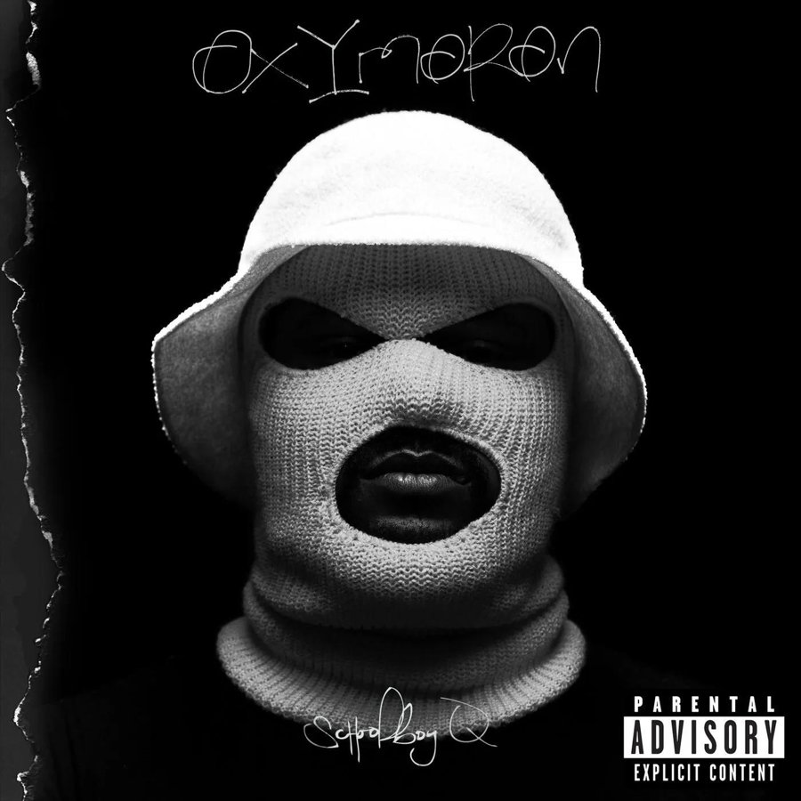
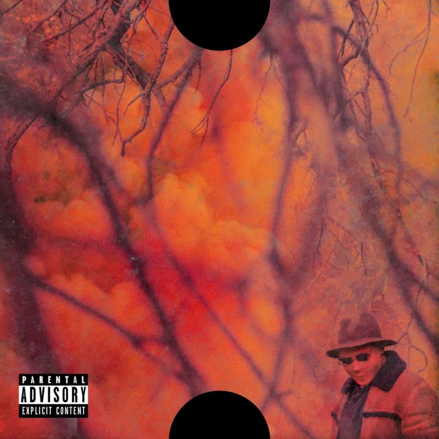
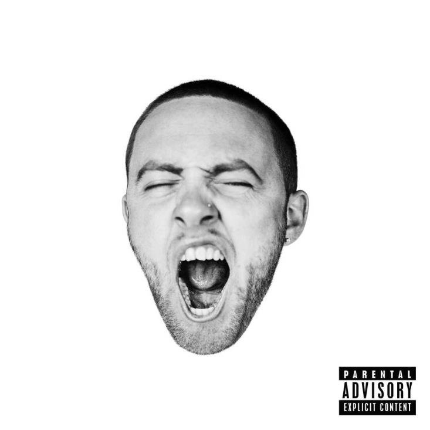
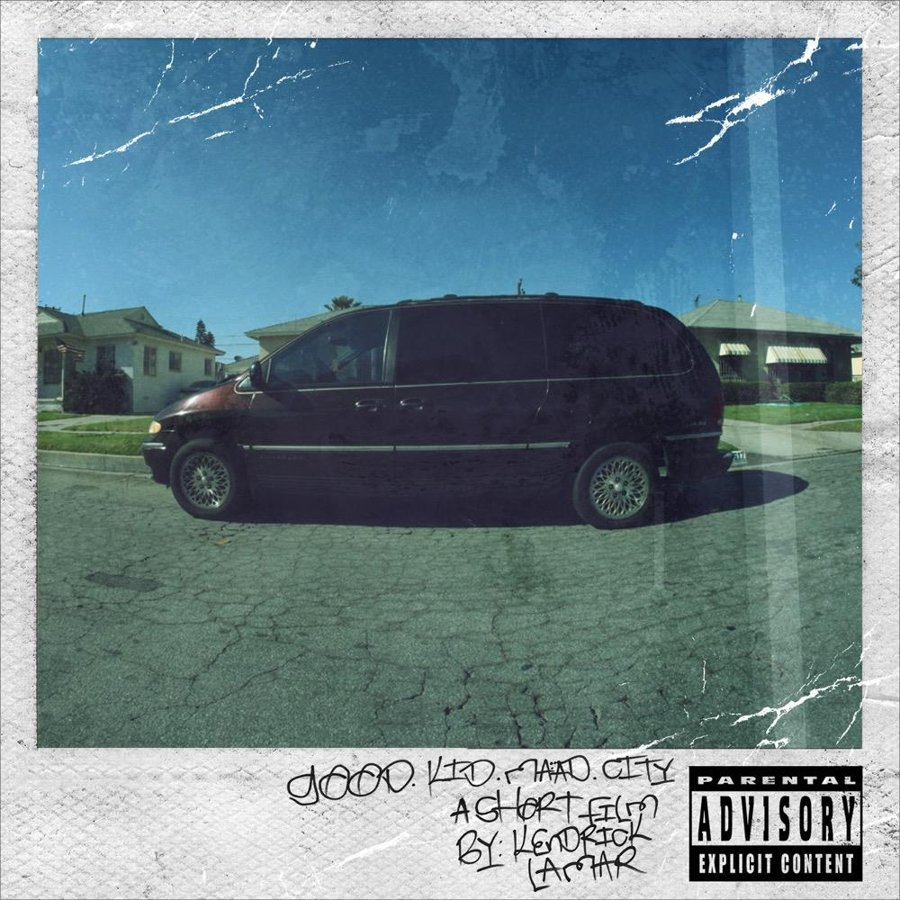
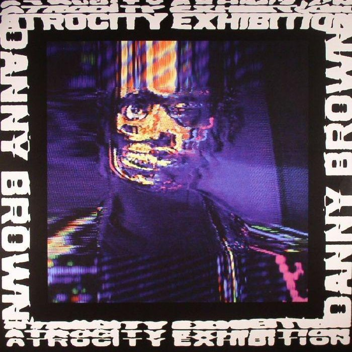
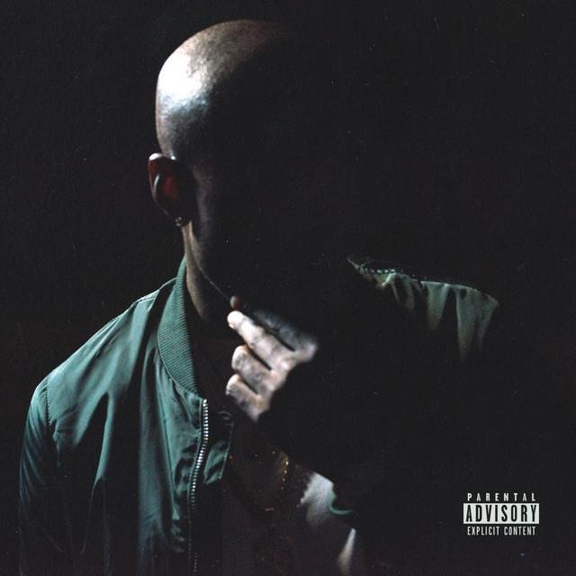
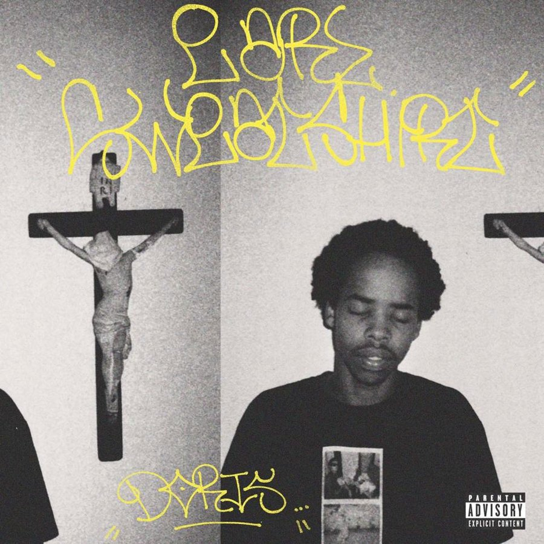
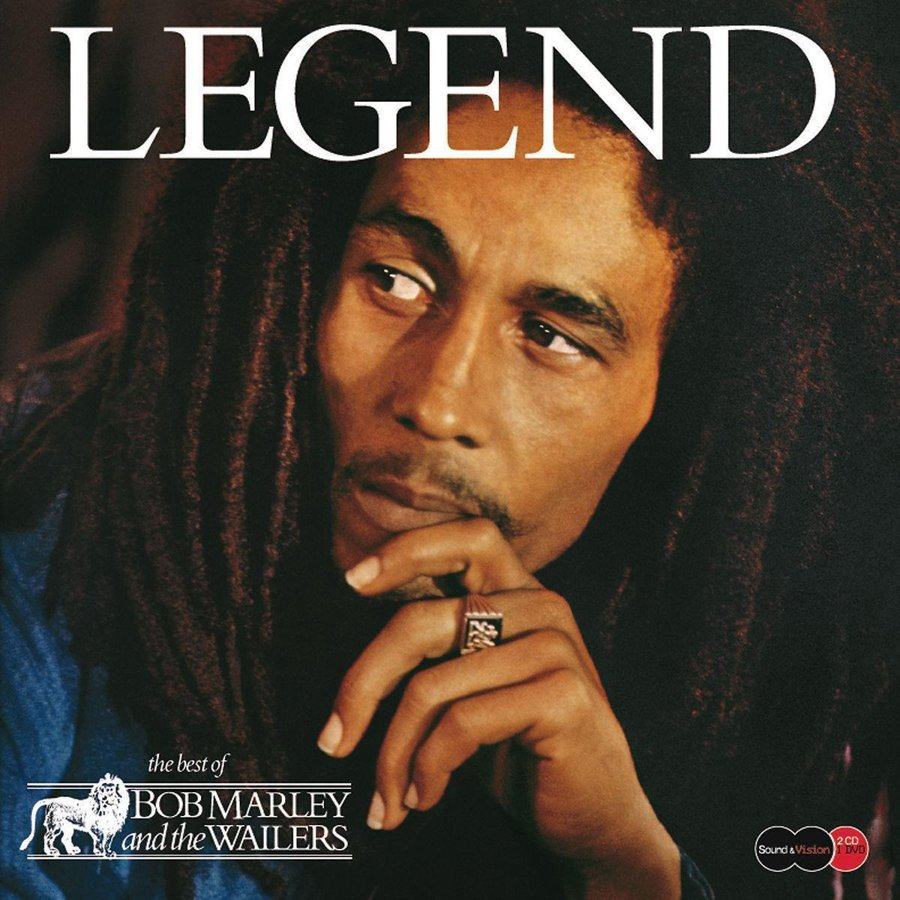
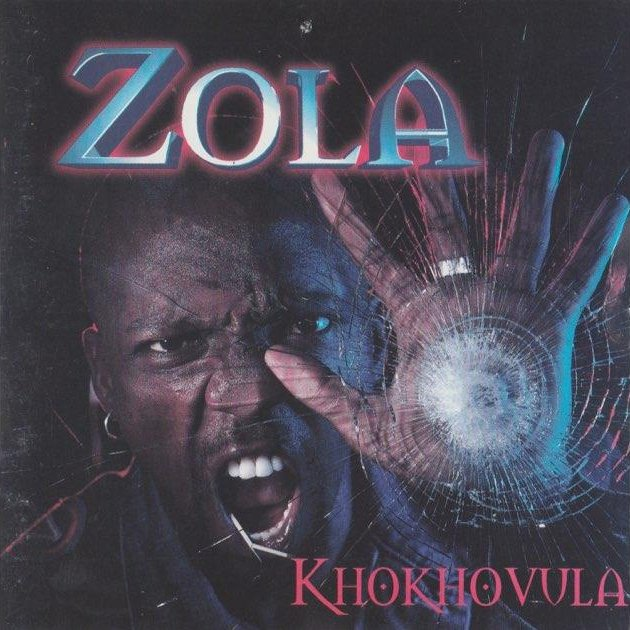

It's difficult to blindly pick nine albums when you listen to a lot of music. But in so far as the albums that have made us who we are today, we've compiled a list of nine records that are constantly in rotation and have played a real role in shaping our musical palate.
This list runs on album quality, replayability, and overall impact — not chronology, not genre, not a ranking anyone should take too seriously. There's no order here, just a fluid list that would look different depending on which metric we used to weigh one body of work against another on any given day. What doesn't change is that every one of these nine has earned its spot through actual repeat listens, not nostalgia alone.

01ScHoolboy Q • 2014
Oxymoron
A banger-fest of an album. Oxymoron is the metaphoric child of TDE's trust in Q — full financial backing behind him for the first time, and he delivers a project that counts among his best, featuring Kendrick Lamar, SZA and Jay Rock among others.

02ScHoolboy Q • 2016
Blank Face LP
ScHoolboy Q's magnum opus is an exhilarating ride of excellent storytelling. An improvement on Oxymoron in every way that matters, Blank Face LP is an album that exhibits real growth as a musician. Guest features — Jadakiss, Kanye West, Anderson .Paak — feel earned, and each one leaves its own mark on this classic.

03Mac Miller • 2015
GO:OD AM
It's easy to identify with a lot of people because of Mac Miller, and GO:OD AM is the album where a lot of us meet him properly. Mac and his music were transparent, personal and genuinely enjoyable. This is one of those albums that can carry you through a busy day, pulling you clean out of the vicissitudes of your own life for forty-odd minutes.

04Kendrick Lamar • 2012
good kid, m.A.A.d city
You could pick another Kendrick album and you'd still be right. But you never forget your first, and GKMC is the instant classic. It served as formal notice that Kung Fu Kenny wasn't trying to be another rapper, but the best rapper, bar none. This is one of those albums that gets better the closer you listen — the whole concept unpacking itself through good music and master-level artistry.

05Danny Brown • 2016
Atrocity Exhibition
When it comes to concept or experimental albums, Atrocity Exhibition is by far one of the best ever made. If you're not paying close attention to the trip Danny effortlessly takes you on, it's easy to get confused into assuming — through his delivery and the punchy, punky beats — that it's just a fun album. It gets darker the longer it plays, delivering a moral lesson through hauntingly escapist narration.

06Freddie Gibbs • 2015
Shadow of a Doubt
Gangster Gibbs has a talent for rapping at a rate few can catch him on. His legendary run with The Alchemist is proof of what happens when you combine a legendary producer with a legendary rapper. Not his best project, but it's far ahead of what a bad album would be — it's hard for Freddie to leave a dud. SOAD hooked us with the first three songs alone, and its highs are stratospheric.

07Earl Sweatshirt • 2013
Doris
Being of a similar age to Earl is exactly why Doris belongs on this list. As he's grown as a person and a musician, his music has evolved right alongside him — and Doris is the album that marks where that journey began, a young man already rapping well beyond his years. If you want an album that perfectly encapsulates youth being navigated in real time, this is the one we'd hand you.

08Bob Marley & The Wailers • 1984
Legend
Some music comes long before you're born. It would be easy to dismiss that as irrelevant — but good music is timeless, full stop. Legend withstands the test of time completely. From romantic ballads to enthusiastic reggae spirituals, this is the perfect answer to the question of what to play when you're orientating a novice reggae listener for the very first time.

09Zola • 2002
Khokhovula
By far the best South African kwaito album, full stop. This was Zola at his musical best, having just been discovered. The record blends gritty township narratives with infectious beats, carrying the raw energy and social commentary that defined Zola's artistry. Through tracks that pulse with street wisdom and defiant pride, Khokhovula captures real resilience in the face of hardship — a voice for the voiceless, and a cultural trailblazer of the kwaito movement.
Why This List Keeps Moving
Ask us this question again in six months and at least two of these nine will have swapped out for something else — that's the honest nature of a rotation list. What won't change is the range: West Coast rap sitting next to South African kwaito, a reggae compilation older than most of our readers next to an album that still sounds like it's glitching out of a broken television. That's not an accident. The albums that actually make you are rarely the ones that sound like each other.
If you've made it this far, you've got nine working Spotify embeds and zero excuses left not to press play. Tell us what's missing — we're always rebuilding this list anyway.